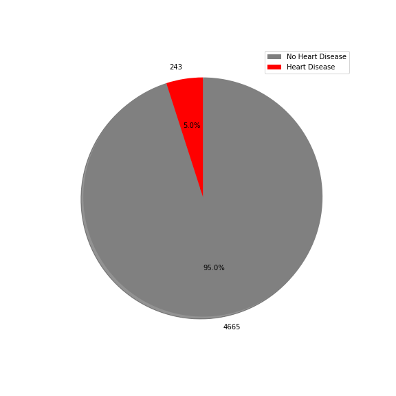
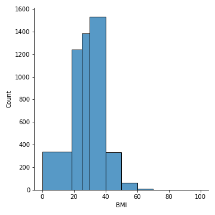
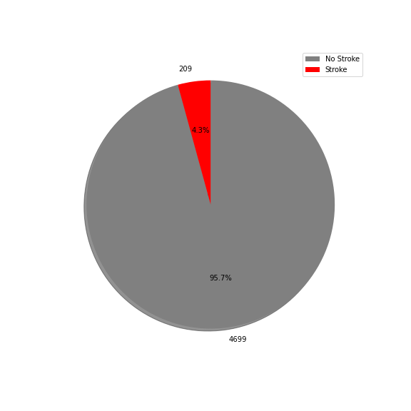
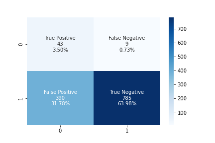

Stroke Prediction Dashboard
Overview
According to the CDC's Stroke Facts, nearly 800,000 strokes occur in the United States on an annual basis. That is an average of one person suffering a stroke every 40 seconds (with someone dying from said stroke once every 3.5 minutes). Of those, there is approximately a 15% 30-day mortality rate. Even for people who survive, many can be left with either very long roads to recovery or ultimately serious long-term disability. Obviously (and unfortunately), strokes are a very serious issue for people in this country. By helping to uncover what factors are more likely to lead to strokes, we ultimately hope to help people avoid them in the first place.
In an attempt to do so, we came across and used a dataset featuring both demographic and health information on 5,110 people and whether or not they had a stroke. Demographic information included gender, age, marital history, occupation, and residence type while health information included whether or not they have hypertension and heart disease, glucose levels, body mass index (BMI), and smoking status. (Information on individuals in the dataset can be viewed using the dropdown menu on the right). Using that information, we aimed to see if we could:
- predict whether or not a person would have a stroke based on that information
- determine which of those factors contribute to having a stroke and by how much
Individual ID#:
Demographic/Health Info
Stroke Dataset Breakdown

* for hypertension, heart_disease, and stroke columns, 0 = no and 1 = yes
We were lucky enough to start out with a relatively clean dataset. It did include 201 null ("NaN") results for BMI and one other Gender that were all dropped in the cleaning process, but that still left us with a substantial group of 4,908 people to work with. Unfortunately, the ultimate origin of the data was unknown, and that would be something that could influence the results. If, for instance, the data came from people who were already concerned about a stroke, or just one hospital, or even a particular region in the United States, those are all things that could introduce bias to the data. As a result, we were left to ask our own questions about the data and how it could potentially impact our findings.
Gender

Gender is one category where we could clearly see that the data wasn't completely randomly selected. While you would expect to see something close to a 50/50 split, this was closer to 60/40. Did some of the data come from a women's clinic, introducing more women to our sample than men? Do women simply go to the hospital more often, and that's where our data came from? While this wasn't necessarily a problem, it did make it clear that our data wasn't a completely random sample.
Age

Age was another category that piqued our interest. While in a completely random sample you would expect to see ages that approximate that of our population, here the ages gradually increased before falling off after the age of 50. Then, while we had a number of people who were exactly 82 years old, there was nobody in the dataset who was older, which seemed very strange. Was the overall trend because older people go to the hospital more often, and that's where the data came from? Was there a cutoff after the age of 82 for some reason? Again, this didn't really cause any problems, but it did raise questions about the original source of the data.
Hypertension

Heart Disease

Marriage Status
Employment
Employment seems like it would be both a very interesting and useful category to look at when trying to see how it correlates to strokes. Are people with certain occupations more prone to strokes than others? That seems like it would be a good thing to know! Unfortunately, this data was lacking in that regard. While it was complete, lumping the vast majority of people into a nebulous Private group wasn't particularly helpful. While this wasn't completely useless, it would have been preferable to have had access to more specific job titles.
Residence

Glucose

* Glucose level <100 = normal, 100-125 = prediabetic, >125 = diabetic
Body Mass Index

* BMI <18.5 = underweight, 18.5-24.9 = normal, 25-29.9 = overweight, ≥30 = obese
Smoking Status
How much of an impact smoking has on having a stroke is definitely something we wanted to look at. While that information was included here, for some reason, the status was listed as unknown for nearly 1,500 of the participants. Unlike with BMI where we lacked information for only a small percentage of the people, here it was much more than that. We didn't want to lose one third of our dataset because of this, so we opted to leave the Unknown results in there.
Stroke Result

Stroke Prediction
Since our data included the ultimate result that we were looking for (whether or not the person had a stroke), we used supervised machine learning to attempt to predict whether or not someone had a stroke given the ten different factors in the dataset. We used six different methods: logistical regression with naive random oversampling, SMOTE oversampling, logistical regression with undersampling, SMOTEENN combination (over and under) sampling, balanced random forest, and easy ensemble. In the end, balanced random forest reigned supreme with 77% accuracy, while the other methods ranged from 50% (logistical regression with undersampling) to 76% (logistical regression with random oversampling).
Random Forest Classification Report

Random Forest Confusion Matrix
